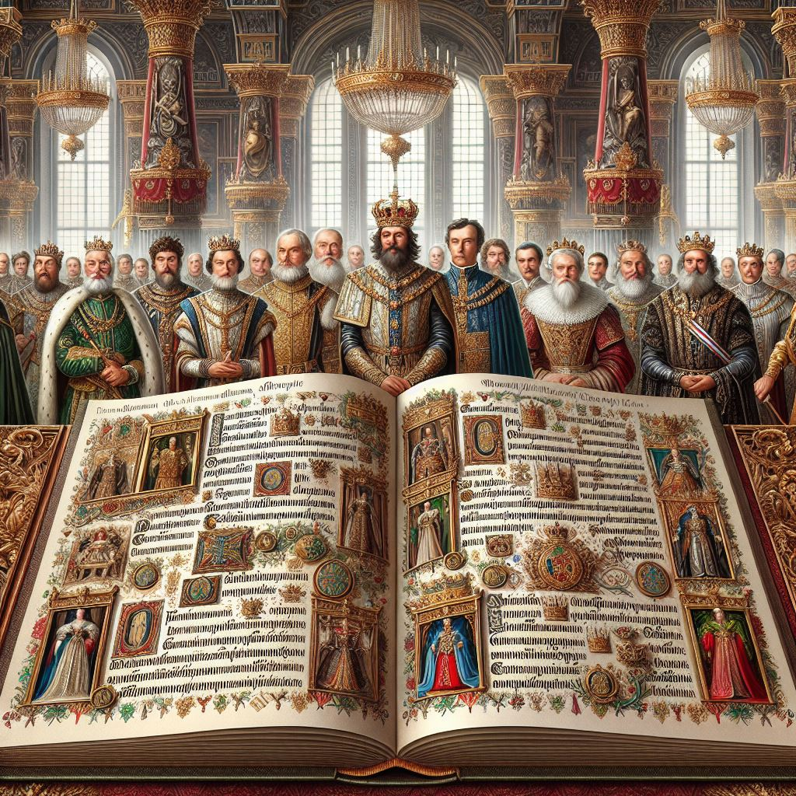

작가
윌리엄 셰익스피어
출판일
1603년
감상평에 대한 AI 그림
셰익스피어의 '햄릿'은 복수와 배신, 그리고 인간의 내면 갈등을 깊이 있게 탐구한 작품이다. 주인공 햄릿의 고뇌와 결단을 통해 인간 존재의 복잡성과 비극성을 생생하게 그려내 나에게 깊은 감동과 철학적 성찰을 불러일으킨 책이다. 또, 등장인물의 감정선과 서로의 관계성이 매우 인상적인 책이다.

감상평에 대한 AI 감정 평가
~~~~AI평가~~~~~
👑 '햄릿'의 인물들이 서로 얽히고설킨 관계 속에서 보여주는 감정의 변화를 생생하게 표현한 평가입니다.
👑 인물들 간의 복잡한 관계성을 인상적으로 묘사한 평가입니다.
👑 등장인물들의 감정선이 잘 드러나 있어 독자가 그들의 내면을 깊이 이해할 수 있는 평가입니다.